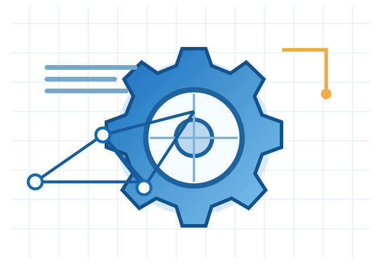

Інтерактивний курс · 9–11 класи
Прикладна механіка та машинобудування
Два роки навчання · 648 годин · 22 укрупнені модулі. Теми об’єднані за змістом, без втрати програмних годин.

Як працює курс
Відкрийте модуль, перегляньте пов’язані теми, виконайте дослідження та сформуйте звіт. Перший інтерактивний модуль реалізовано як пілот; інші сторінки є затвердженою структурою для наступного наповнення.